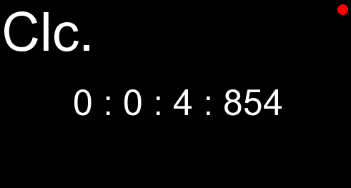

clc. about
STATUS : RELEASED
clc. is super simple time counter using RGFW windowing framework and Glyph for rendering text with OpenGL.
currently clc project use bash script to get dependency for build in debian-base linux, and then use Cmake for
building.
clc. feature :
├── restore last time data after restart
├── easy to contribute and getting in touch we project
└── fast , minimal
contribute ⧓ report
it's very joyable for me that if you have issues , suggestion ⧓ or report while using clc to reach this
address's :
clc mailing list in source hut
clc todo list also in source hut
clc github repository in github
